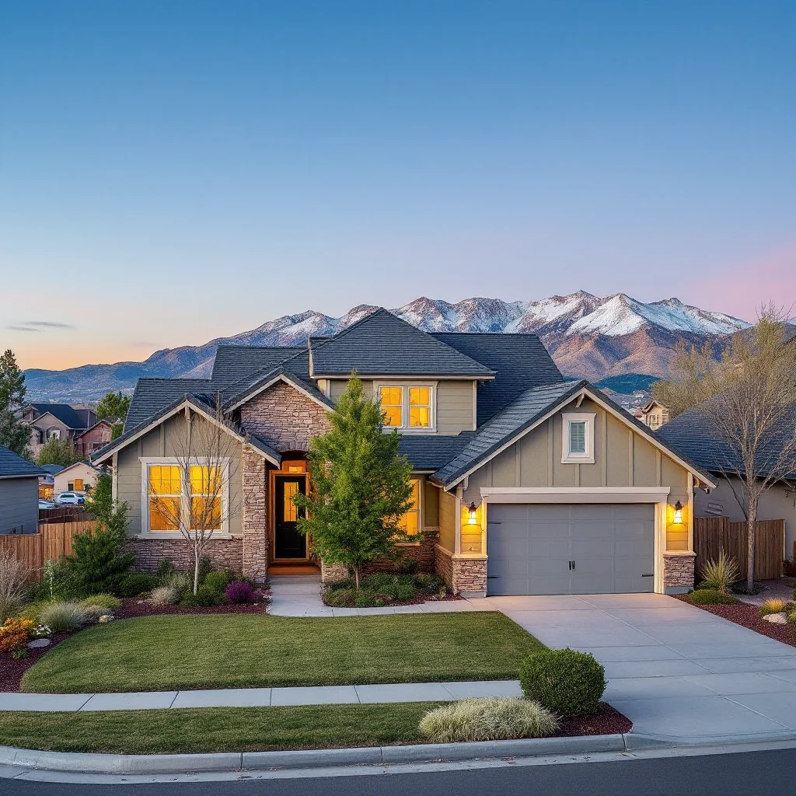

Found Mold? Here's What You Need to Know First.
Briargate's newer construction — most homes built from the 1990s through the 2010s — creates a false sense of security about mold. Newer homes are tighter and better-insulated, but that tightness can work against moisture management. When monsoon moisture enters a finished basement through window wells or foundation walls, it gets trapped inside walls and under flooring where it sustains mold growth for months before anyone notices.
The pattern we see repeatedly in Briargate: finished basement wall cavity mold that started after a monsoon event nobody thought much of at the time. By the time the musty smell appears, the colony has been growing since July.
What DIY Approaches Miss
Finished basement walls hide the problem. Bleach spray on a visible surface doesn't reach mold growing behind drywall. The surface looks clean, the smell fades briefly, and the mold returns — often more extensive than before because the surface now has additional moisture.
Without containment, spores spread through HVAC. Briargate homes typically have forced-air systems that circulate throughout the house. Disturbing mold without negative pressure containment sends spores into the air handler within minutes.
Window well drainage is the real problem. Most Briargate basement mold follows failed or overwhelmed window well drains. Clearing the drain isn't enough — the moisture already inside the wall needs to be found and the mold remediated before reconstruction.
How We Handle Mold Remediation Near Briargate
- Free Inspection: Moisture meters and visual inspection identify all affected areas. Written scope and price before work starts.
- Containment: Plastic sheeting and negative air pressure isolate the work area from your HVAC system and living spaces.
- Remove and Treat: Contaminated drywall, insulation, and other porous materials are removed and disposed of. All surfaces are HEPA-vacuumed and treated with antimicrobial solution.
- Moisture Source Addressed: Window well drainage, foundation waterproofing gaps, or other sources are identified and corrected or clearly scoped.
- HEPA Air Scrubbing: Commercial air scrubbers run in containment before it opens to the rest of the home.
- Clearance Testing: Independent air sampling confirms spore counts are back to normal. Written documentation provided.
What Briargate Homeowners Are Saying
"Noticed a musty smell in the finished basement in late August. Turned out to be mold behind two sections of drywall near a window well — the drain had been backing up. Two-day job, clearance test passed, rebuilt and repainted within two weeks."
— Stephanie K., Briargate"Home inspector didn't catch the mold during our purchase. Springs Mold Solutions found it behind the laundry room wall during a pre-move-in inspection we scheduled separately. Glad we did — saved a bigger headache."
— Marcus L., BriargateWhat Does Mold Remediation Cost Near Briargate?
Small area (under 10 sq ft): $500–$1,500
Mid-size (10–100 sq ft): $1,500–$4,000
Large / whole basement section: $4,000–$9,000
Post-remediation clearance testing: $300–$500
Most Briargate jobs involve a section of finished basement wall and land in the $1,500–$3,500 range. Free inspection gives you the exact number.
Quick Answers Before You Call
Are finished basements more vulnerable to hidden mold?
Yes. Finished materials (drywall, insulation, carpet padding) absorb and hold moisture in ways that unfinished masonry walls don't. When moisture enters a finished basement, it gets inside the wall assembly where it's both invisible and ideal for mold growth. This is why moisture mapping is essential — not just a visual inspection.
My window well drains fine now. Do I still need an inspection?
If water got inside the wall during a past flooding event, yes. The drain working now doesn't undo moisture that already penetrated. A post-event moisture inspection is the only way to know if structural materials dried completely or if mold has started.
How long does remediation take?
Small to mid-size jobs: one day. Larger projects: 2–3 days. Exact timeline in your written estimate.
Mold Doesn't Pause. Neither Should You.
Free inspection. Written estimate. No obligation. We answer or call back within 1 hour.
📞 (719) 496-8287